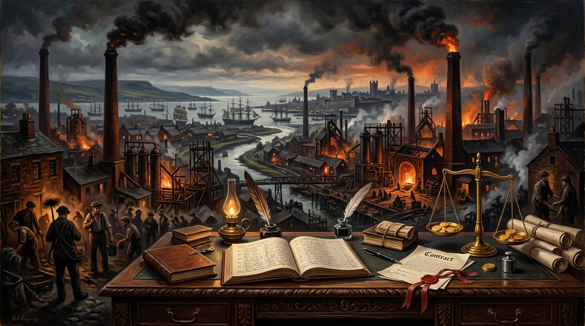

Why the Age of Capital Is Written in Blood.
An Examination of Industrial Misery, Imperial Plunder, and the Myth of Self-Made Prosperity.

“The defenders of capitalism often speak as if history began yesterday... What they rarely discuss is the mountain of corpses upon which much of that prosperity was built.” — Trevor Swistchew
Historical Dossier: Primitive Accumulation, Empire & Commodification
Political Economy, Industrial Enclosure & The Socialisation of CostThe Blood-Stained Genesis: Enclosure, Enslavement & Colonial Plunder
Modern prosperity did not originate in isolated merchant thrift. As Karl Marx documented in Capital and Eric Williams detailed in Capitalism and Slavery, initial capital was violently assembled through chattel slavery, forced land clearances, child labor in textile mills, and imperial conquest. Sven Beckert's concept of “war capitalism” shows that global cotton monopolies and British industrialization were built upon violent coercion, state militarism, and captive overseas markets long before the polite myth of free-market meritocracy took hold.
The defenders of capitalism often speak as if history began yesterday. They point to the supermarket shelf, the smartphone, the stock market, and the billionaire entrepreneur and announce triumphantly that capitalism created prosperity. What they rarely discuss is the mountain of corpses upon which much of that prosperity was built.[1]
The Industrial Revolution is remembered as a story of progress. For millions, it was a story of misery.[4] Men, women, and children worked brutal hours in mines and factories. Children lost limbs in machinery. Workers lived in overcrowded slums poisoned by industrial pollution. Those who generated the wealth frequently died in poverty while factory owners accumulated fortunes beyond imagination.
Empire and capitalism marched hand in hand for centuries.[2] Colonies supplied raw materials, cheap labour, captive markets, and vast profits.[3] Wealth flowed towards powerful states and commercial interests while local populations paid the price. The profits were privatised. The suffering was socialised.
“Colonies supplied raw materials, cheap labour, captive markets, and vast profits. Wealth flowed towards powerful states and commercial interests while local populations paid the price. The profits were privatised. The suffering was socialised.”
The defenders of the system say that competition creates efficiency. Sometimes it does. Yet competition also creates a relentless drive to reduce costs and maximise profit. Human beings become numbers on spreadsheets. Communities become disposable. Forests become assets. Rivers become waste channels. Entire regions become sacrifice zones if exploiting them generates sufficient returns.[5]
The aim is always the same. Profit first.
If wages must be suppressed, suppress them.
If jobs must be exported, export them.
If communities collapse, let them collapse.
If workers become expendable, replace them.
If the environment is damaged, calculate whether the fines cost less than profits.
The logic remains untouched.
Supporters argue that no better alternative exists. Their claim avoids the real question. The question is not whether capitalism created wealth. Clearly it did. The question is why unprecedented levels of wealth coexist with poverty, homelessness, hunger, insecurity, and economic worry on an International scale.
Never before in human history has humanity possessed such productive capacity. Never before has it generated such extraordinary abundance. Yet millions struggle to secure necessities while immense fortunes accumulate at the top.[6]
The contradiction is impossible to ignore.
The wealthy often present themselves as self-made. The phrase is one of their myths. No fortune is created in isolation. Every enterprise depends upon workers, infrastructure, education systems, legal protections, transport networks, scientific knowledge, and public institutions built by society as a whole. Yet when profits arrive they are frequently treated as the achievement of individuals.
“A newborn child inherits neither merit nor failure. One child enters life surrounded by wealth, influence, contacts, and opportunity. Another enters poverty. Before either speaks a single word their life chances may already be radically different. The system then calls the outcome fair.”
For generations ordinary people have been told that this arrangement reflects merit. Yet a newborn child inherits neither merit nor failure. One child enters life surrounded by wealth, influence, contacts, and opportunity. Another enters poverty. Before either speaks a single word their life chances may already be radically different. The system then calls the outcome fair.
History offers a harsher judgment. Much of humanity's wealth was accumulated through conquest, exploitation, inherited privilege, unequal bargaining power, monopolistic practices, political influence, and the ability of those with power to shape the rules in their favour.
Trevor Swistchew
Scottish Salon AuthorScottish essayist, social commentator, and philosopher interrogating imperial violence, corporate oligarchy, constitutional covenants, and human emancipation. Trevor's essays form the cornerstone of the Scottish Literary Salon compendium and inspire musical companion pieces recorded with The Shady River Bard.